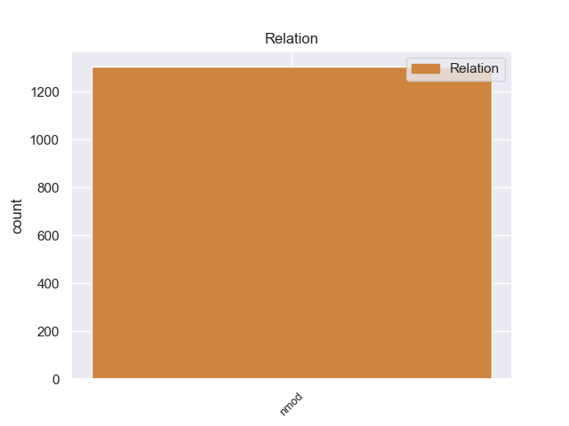
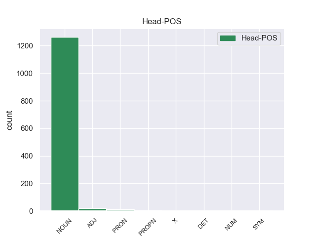
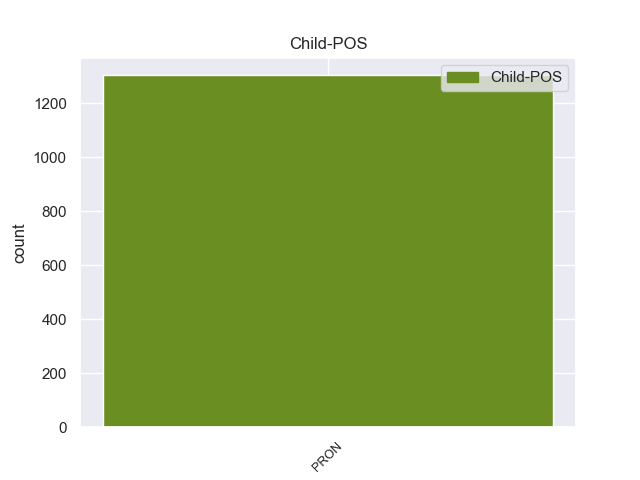

Distribution of features within this leaf



Morphosyntax Rules sorted by frequency.
- When the dependent token is the nominal modifier(nmod) of the head token, and the head token is NOUN and the dependent token is PRON, the Gender needs to be Neut.
1 Грибы _ _ _ _ 0 _ _ _
2 стояли _ _ _ _ 0 _ _ _
3 в _ _ _ _ 0 _ _ _
4 лезвистой _ _ _ _ 0 _ _ _
5 осоковатой _ _ _ _ 0 _ _ _
6 траве _ _ _ _ 0 _ _ _
7 не _ _ _ _ 0 _ _ _
8 то то PRON _ Animacy=Inan|Case=Nom|Gender=Neut|Number=Sing 10 nmod 10:nmod _
9 что _ _ _ _ 0 _ _ _
10 табунками табунок NOUN _ Animacy=Inan|Case=Ins|Gender=Masc|Number=Plur 0 _ _ _
11 , _ _ _ _ 0 _ _ _
12 они _ _ _ _ 0 _ _ _
13 сливались _ _ _ _ 0 _ _ _
14 в _ _ _ _ 0 _ _ _
15 сплошные _ _ _ _ 0 _ _ _
16 изжелта _ _ _ _ 0 _ _ _
17 - _ _ _ _ 0 _ _ _
18 бурые _ _ _ _ 0 _ _ _
19 поля _ _ _ _ 0 _ _ _
20 . _ _ _ _ 0 _ _ _
1 Крупные _ _ _ _ 0 _ _ _
2 промышленные _ _ _ _ 0 _ _ _
3 аварии _ _ _ _ 0 _ _ _
4 дополнили _ _ _ _ 0 _ _ _
5 и _ _ _ _ 0 _ _ _
6 без _ _ _ _ 0 _ _ _
7 того то PRON _ Animacy=Inan|Case=Gen|Gender=Neut|Number=Sing 8 nmod 8:nmod _
8 мрачную мрачный ADJ _ Case=Acc|Degree=Pos|Gender=Fem|Number=Sing 0 _ _ _
9 картину _ _ _ _ 0 _ _ _
10 . _ _ _ _ 0 _ _ _
1 Вот _ _ _ _ 0 _ _ _
2 почему _ _ _ _ 0 _ _ _
3 , _ _ _ _ 0 _ _ _
4 если _ _ _ _ 0 _ _ _
5 в _ _ _ _ 0 _ _ _
6 сернокислом _ _ _ _ 0 _ _ _
7 растворе _ _ _ _ 0 _ _ _
8 содержится _ _ _ _ 0 _ _ _
9 много _ _ _ _ 0 _ _ _
10 разных _ _ _ _ 0 _ _ _
11 ионов _ _ _ _ 0 _ _ _
12 , _ _ _ _ 0 _ _ _
13 скажем _ _ _ _ 0 _ _ _
14 молибдена _ _ _ _ 0 _ _ _
15 , _ _ _ _ 0 _ _ _
16 никеля _ _ _ _ 0 _ _ _
17 , _ _ _ _ 0 _ _ _
18 меди _ _ _ _ 0 _ _ _
19 , _ _ _ _ 0 _ _ _
20 калия _ _ _ _ 0 _ _ _
21 , _ _ _ _ 0 _ _ _
22 рения _ _ _ _ 0 _ _ _
23 , _ _ _ _ 0 _ _ _
24 а _ _ _ _ 0 _ _ _
25 извлечь _ _ _ _ 0 _ _ _
26 нужно _ _ _ _ 0 _ _ _
27 рений _ _ _ _ 0 _ _ _
28 , _ _ _ _ 0 _ _ _
29 которого который PRON _ Case=Gen 0 _ _ _
30 меньше _ _ _ _ 0 _ _ _
31 всего все PRON _ Animacy=Inan|Case=Gen|Gender=Neut|Number=Sing 29 nmod 29:nmod SpaceAfter=No
32 , _ _ _ _ 0 _ _ _
33 то _ _ _ _ 0 _ _ _
34 эффективно _ _ _ _ 0 _ _ _
35 справиться _ _ _ _ 0 _ _ _
36 с _ _ _ _ 0 _ _ _
37 этим _ _ _ _ 0 _ _ _
38 могут _ _ _ _ 0 _ _ _
39 жидкие _ _ _ _ 0 _ _ _
40 мембраны _ _ _ _ 0 _ _ _
41 , _ _ _ _ 0 _ _ _
42 которые _ _ _ _ 0 _ _ _
43 легко _ _ _ _ 0 _ _ _
44 создавать _ _ _ _ 0 _ _ _
45 , _ _ _ _ 0 _ _ _
46 вводя _ _ _ _ 0 _ _ _
47 различные _ _ _ _ 0 _ _ _
48 избирательные _ _ _ _ 0 _ _ _
49 реагенты _ _ _ _ 0 _ _ _
50 . _ _ _ _ 0 _ _ _
1 Дескать _ _ _ _ 0 _ _ _
2 , _ _ _ _ 0 _ _ _
3 он _ _ _ _ 0 _ _ _
4 , _ _ _ _ 0 _ _ _
5 царь _ _ _ _ 0 _ _ _
6 - _ _ _ _ 0 _ _ _
7 дурак _ _ _ _ 0 _ _ _
8 , _ _ _ _ 0 _ _ _
9 своим _ _ _ _ 0 _ _ _
10 тупым _ _ _ _ 0 _ _ _
11 авторитаризмом _ _ _ _ 0 _ _ _
12 довел _ _ _ _ 0 _ _ _
13 до _ _ _ _ 0 _ _ _
14 взрыва _ _ _ _ 0 _ _ _
15 ( _ _ _ _ 0 _ _ _
16 Ихлов _ _ _ _ 0 _ _ _
17 и _ _ _ _ 0 _ _ _
18 того _ _ _ _ 0 _ _ _
19 дальше _ _ _ _ 0 _ _ _
20 хватил _ _ _ _ 0 _ _ _
21 : _ _ _ _ 0 _ _ _
22 мол _ _ _ _ 0 _ _ _
23 , _ _ _ _ 0 _ _ _
24 это это PRON _ Animacy=Inan|Case=Nom|Gender=Neut|Number=Sing 25 nmod 25:nmod _
25 Столыпин Столыпин PROPN _ Animacy=Anim|Case=Nom|Gender=Masc|Number=Sing 0 _ _ _
26 своими _ _ _ _ 0 _ _ _
27 авторитарными _ _ _ _ 0 _ _ _
28 реформами _ _ _ _ 0 _ _ _
29 довел _ _ _ _ 0 _ _ _
30 до _ _ _ _ 0 _ _ _
31 взрыва _ _ _ _ 0 _ _ _
32 ) _ _ _ _ 0 _ _ _
33 . _ _ _ _ 0 _ _ _
1 Далеко _ _ _ _ 0 _ _ _
2 не _ _ _ _ 0 _ _ _
3 всегда _ _ _ _ 0 _ _ _
4 при _ _ _ _ 0 _ _ _
5 этом это PRON _ Animacy=Inan|Case=Loc|Gender=Neut|Number=Sing 6 nmod 6:nmod _
6 те тот DET _ Case=Nom|Number=Plur 0 _ _ _
7 , _ _ _ _ 0 _ _ _
8 кому _ _ _ _ 0 _ _ _
9 нужно _ _ _ _ 0 _ _ _
10 помочь _ _ _ _ 0 _ _ _
11 в _ _ _ _ 0 _ _ _
12 первую _ _ _ _ 0 _ _ _
13 очередь _ _ _ _ 0 _ _ _
14 . _ _ _ _ 0 _ _ _
non-conforming Examples:
1 Может _ _ _ _ 0 _ _ _
2 быть _ _ _ _ 0 _ _ _
3 , _ _ _ _ 0 _ _ _
4 ему _ _ _ _ 0 _ _ _
5 вспомнился _ _ _ _ 0 _ _ _
6 давний _ _ _ _ 0 _ _ _
7 случай _ _ _ _ 0 _ _ _
8 с _ _ _ _ 0 _ _ _
9 женщиной _ _ _ _ 0 _ _ _
10 , _ _ _ _ 0 _ _ _
11 которую _ _ _ _ 0 _ _ _
12 долго _ _ _ _ 0 _ _ _
13 не _ _ _ _ 0 _ _ _
14 принимали _ _ _ _ 0 _ _ _
15 на _ _ _ _ 0 _ _ _
16 работу _ _ _ _ 0 _ _ _
17 , _ _ _ _ 0 _ _ _
18 потому _ _ _ _ 0 _ _ _
19 что _ _ _ _ 0 _ _ _
20 муж муж NOUN _ Animacy=Anim|Case=Nom|Gender=Masc|Number=Sing 0 _ _ _
21 ее она PRON _ Case=Gen|Gender=Fem|Number=Sing|Person=3 20 nmod 20:nmod _
22 оказался _ _ _ _ 0 _ _ _
23 замешанным _ _ _ _ 0 _ _ _
24 в _ _ _ _ 0 _ _ _
25 какую-то _ _ _ _ 0 _ _ _
26 непонятную _ _ _ _ 0 _ _ _
27 историю _ _ _ _ 0 _ _ _
28 и _ _ _ _ 0 _ _ _
29 был _ _ _ _ 0 _ _ _
30 арестован _ _ _ _ 0 _ _ _
31 . _ _ _ _ 0 _ _ _
1 Но _ _ _ _ 0 _ _ _
2 когда _ _ _ _ 0 _ _ _
3 поднялся _ _ _ _ 0 _ _ _
4 над _ _ _ _ 0 _ _ _
5 гребнем _ _ _ _ 0 _ _ _
6 оврага _ _ _ _ 0 _ _ _
7 , _ _ _ _ 0 _ _ _
8 пришлось _ _ _ _ 0 _ _ _
9 лечь _ _ _ _ 0 _ _ _
10 : _ _ _ _ 0 _ _ _
11 над _ _ _ _ 0 _ _ _
12 полем _ _ _ _ 0 _ _ _
13 сквозь _ _ _ _ 0 _ _ _
14 дым _ _ _ _ 0 _ _ _
15 поземки _ _ _ _ 0 _ _ _
16 неслась _ _ _ _ 0 _ _ _
17 огненная _ _ _ _ 0 _ _ _
18 метель _ _ _ _ 0 _ _ _
19 , _ _ _ _ 0 _ _ _
20 и _ _ _ _ 0 _ _ _
21 снег снег NOUN _ Animacy=Inan|Case=Nom|Gender=Masc|Number=Sing 0 _ _ _
22 под _ _ _ _ 0 _ _ _
23 нею она PRON _ Case=Ins|Gender=Fem|Number=Sing|Person=3 21 nmod 21:nmod _
24 освещался _ _ _ _ 0 _ _ _
25 мгновенно _ _ _ _ 0 _ _ _
26 и _ _ _ _ 0 _ _ _
27 ярко _ _ _ _ 0 _ _ _
28 . _ _ _ _ 0 _ _ _
1 Там _ _ _ _ 0 _ _ _
2 , _ _ _ _ 0 _ _ _
3 на _ _ _ _ 0 _ _ _
4 поле _ _ _ _ 0 _ _ _
5 , _ _ _ _ 0 _ _ _
6 под _ _ _ _ 0 _ _ _
7 разрывами _ _ _ _ 0 _ _ _
8 , _ _ _ _ 0 _ _ _
9 под _ _ _ _ 0 _ _ _
10 огнем _ _ _ _ 0 _ _ _
11 танков _ _ _ _ 0 _ _ _
12 дрались _ _ _ _ 0 _ _ _
13 и _ _ _ _ 0 _ _ _
14 умирали _ _ _ _ 0 _ _ _
15 ребята _ _ _ _ 0 _ _ _
16 , _ _ _ _ 0 _ _ _
17 его он PRON _ Case=Gen|Gender=Masc|Number=Sing|Person=3 18 nmod 18:nmod _
18 товарищи товарищ NOUN _ Animacy=Anim|Case=Nom|Gender=Masc|Number=Plur 0 _ _ _
19 , _ _ _ _ 0 _ _ _
20 а _ _ _ _ 0 _ _ _
21 он _ _ _ _ 0 _ _ _
22 здесь _ _ _ _ 0 _ _ _
23 , _ _ _ _ 0 _ _ _
24 в _ _ _ _ 0 _ _ _
25 безопасности _ _ _ _ 0 _ _ _
26 , _ _ _ _ 0 _ _ _
27 бегал _ _ _ _ 0 _ _ _
28 за _ _ _ _ 0 _ _ _
29 капитаном _ _ _ _ 0 _ _ _
30 с _ _ _ _ 0 _ _ _
31 батареи _ _ _ _ 0 _ _ _
32 на _ _ _ _ 0 _ _ _
33 батарею _ _ _ _ 0 _ _ _
34 , _ _ _ _ 0 _ _ _
35 и _ _ _ _ 0 _ _ _
36 на _ _ _ _ 0 _ _ _
37 каждой _ _ _ _ 0 _ _ _
38 батарее _ _ _ _ 0 _ _ _
39 капитан _ _ _ _ 0 _ _ _
40 кричал _ _ _ _ 0 _ _ _
41 и _ _ _ _ 0 _ _ _
42 тряс _ _ _ _ 0 _ _ _
43 пистолетом _ _ _ _ 0 _ _ _
44 . _ _ _ _ 0 _ _ _
1 Выводы _ _ _ _ 0 _ _ _
2 , _ _ _ _ 0 _ _ _
3 которые _ _ _ _ 0 _ _ _
4 изложил _ _ _ _ 0 _ _ _
5 ученый _ _ _ _ 0 _ _ _
6 в _ _ _ _ 0 _ _ _
7 своем _ _ _ _ 0 _ _ _
8 докладе _ _ _ _ 0 _ _ _
9 " _ _ _ _ 0 _ _ _
10 О _ _ _ _ 0 _ _ _
11 природе _ _ _ _ 0 _ _ _
12 глобального _ _ _ _ 0 _ _ _
13 экологического _ _ _ _ 0 _ _ _
14 кризиса _ _ _ _ 0 _ _ _
15 на _ _ _ _ 0 _ _ _
16 Земле _ _ _ _ 0 _ _ _
17 " _ _ _ _ 0 _ _ _
18 , _ _ _ _ 0 _ _ _
19 вполне _ _ _ _ 0 _ _ _
20 можно _ _ _ _ 0 _ _ _
21 назвать _ _ _ _ 0 _ _ _
22 квинтэссенцией _ _ _ _ 0 _ _ _
23 множества _ _ _ _ 0 _ _ _
24 выступлений _ _ _ _ 0 _ _ _
25 его он PRON _ Case=Gen|Gender=Masc|Number=Sing|Person=3 26 nmod 26:nmod _
26 коллег коллега NOUN _ Animacy=Anim|Case=Gen|Gender=Masc|Number=Plur 0 _ _ _
27 , _ _ _ _ 0 _ _ _
28 озабоченных _ _ _ _ 0 _ _ _
29 проблемой _ _ _ _ 0 _ _ _
30 климатической _ _ _ _ 0 _ _ _
31 изменчивости _ _ _ _ 0 _ _ _
32 . _ _ _ _ 0 _ _ _
1 На _ _ _ _ 0 _ _ _
2 пути _ _ _ _ 0 _ _ _
3 к _ _ _ _ 0 _ _ _
4 этой _ _ _ _ 0 _ _ _
5 цели _ _ _ _ 0 _ _ _
6 человек _ _ _ _ 0 _ _ _
7 , _ _ _ _ 0 _ _ _
8 главным _ _ _ _ 0 _ _ _
9 отличием _ _ _ _ 0 _ _ _
10 которого _ _ _ _ 0 _ _ _
11 от _ _ _ _ 0 _ _ _
12 иных _ _ _ _ 0 _ _ _
13 живых _ _ _ _ 0 _ _ _
14 форм _ _ _ _ 0 _ _ _
15 на _ _ _ _ 0 _ _ _
16 Земле _ _ _ _ 0 _ _ _
17 является _ _ _ _ 0 _ _ _
18 наличие _ _ _ _ 0 _ _ _
19 интеллекта _ _ _ _ 0 _ _ _
20 , _ _ _ _ 0 _ _ _
21 постоянно _ _ _ _ 0 _ _ _
22 создавал _ _ _ _ 0 _ _ _
23 различные _ _ _ _ 0 _ _ _
24 устройства _ _ _ _ 0 _ _ _
25 и _ _ _ _ 0 _ _ _
26 процессы _ _ _ _ 0 _ _ _
27 для _ _ _ _ 0 _ _ _
28 облегчения _ _ _ _ 0 _ _ _
29 и _ _ _ _ 0 _ _ _
30 улучшения _ _ _ _ 0 _ _ _
31 условий _ _ _ _ 0 _ _ _
32 своего _ _ _ _ 0 _ _ _
33 существования _ _ _ _ 0 _ _ _
34 , _ _ _ _ 0 _ _ _
35 быстро _ _ _ _ 0 _ _ _
36 вовлек _ _ _ _ 0 _ _ _
37 в _ _ _ _ 0 _ _ _
38 этот _ _ _ _ 0 _ _ _
39 процесс _ _ _ _ 0 _ _ _
40 для _ _ _ _ 0 _ _ _
41 его он PRON _ Case=Gen|Gender=Masc|Number=Sing|Person=3 42 nmod 42:nmod _
42 интенсификации интенсификация NOUN _ Animacy=Inan|Case=Gen|Gender=Fem|Number=Sing 0 _ _ _
43 несолнечные _ _ _ _ 0 _ _ _
44 источники _ _ _ _ 0 _ _ _
45 энергии _ _ _ _ 0 _ _ _
46 , _ _ _ _ 0 _ _ _
47 а _ _ _ _ 0 _ _ _
48 в _ _ _ _ 0 _ _ _
49 результате _ _ _ _ 0 _ _ _
50 человечество _ _ _ _ 0 _ _ _
51 получило _ _ _ _ 0 _ _ _
52 неустойчивую _ _ _ _ 0 _ _ _
53 технологическую _ _ _ _ 0 _ _ _
54 основу _ _ _ _ 0 _ _ _
55 современной _ _ _ _ 0 _ _ _
56 цивилизации _ _ _ _ 0 _ _ _
57 " _ _ _ _ 0 _ _ _
58 . _ _ _ _ 0 _ _ _